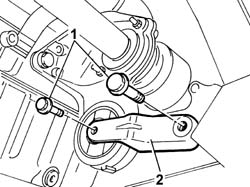
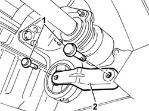
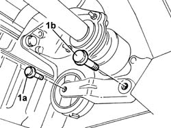

1008C30 POWER UNIT LOWER REACTION LINK - R.R.
- Path
- Procedures > 10 ENGINE > 1008 POWER UNIT SUPPORTS > 1008C POWER UNIT REACTION ELEMENTS > 1008C30 POWER UNIT LOWER REACTION LINK - R.R.
- Kind
- repair procedure (removal / refitting; the operation number is the code)
- Applies to
- all engines; all production periods
- Interactive page
- https://sloeber94.github.io/elrnDB-fUlss/en/#/179006859
Applies to: engines: 2.0 16V JTD; all production periods
 Removing
Removing
 Refitting
RefittingSee
Op. 7055B54 UNDER ENGINE PROTECTION/GUARD - R.R.
Position a hydraulic support under the engine oil sump.
1. Undo the bolts fixing the reaction rod to the intermediate driveshaft support and to the suspension frame.
2. Remove the power unit lower reaction rod.

Applies to: engines: 2.0 16V JTD; all production periods
Refitting
RemovingFit the lower reaction rod in the housing in the engine.
Tighten the bolts fixing the reaction rod to the intermediate driveshaft support and to the suspension frame to torque.
da Nm | Fastening | Component | dia |
|---|---|---|---|
6.5 | Bolt | REACTION ROD TO DRIVESHAFT SUPPORT |
da Nm | Fastening | Component | dia |
|---|---|---|---|
9.0 | Bolt | REACTION ROD TO BODYSHELL |
Remove the hydraulic support positioned previously under the engine oil sump.
See
Applies to: engines: 3.0 24V V6; all production periods
- Op. not available
Applies to: engines: 2.0 16v; all production periods
Removing
RefittingOp. 7055B54 UNDER ENGINE PROTECTION/GUARD - R.R.
- Position a hydraulic support under the engine oil sump.
- Undo the bolts fixing the reaction rod to the intermediate driveshaft support and to the suspension frame.
- Remove the power unit lower reaction rod.

Applies to: engines: 2.0 16v; all production periods
Refitting
Removing- Fit the lower reaction rod in the housing in the engine.
- Tighten the bolts fixing the reaction rod to the intermediate driveshaft support and to the suspension frame to torque.
 | Value - daNm | Fastening | Component | Ø |
|---|---|---|---|---|
1a | 6.5 | Bolt | POWER UNIT LOWER REACTION LINK |
| Value - daNm | Fastening | Component | Ø |
|---|---|---|---|---|
1b | 9 | Bolt | POWER UNIT LOWER REACTION LINK |

Applies to: engines: 2.0 16v; all production periods
- Remove the hydraulic column support positioned previously under the engine oil sump.
Applies to: engines: 2.2 16V JTD; all production periods
Removing
RefittingSee
Op. 7055B54 UNDER ENGINE PROTECTION/GUARD - R.R.
Position a hydraulic support under the engine oil sump.
1. Undo the bolts fixing the reaction rod to the intermediate driveshaft support and to the suspension frame.
2. Remove the power unit lower reaction rod.
Applies to: engines: 2.2 16V JTD; all production periods
Refitting
RemovingFit the lower reaction rod in the housing in the engine.
Tighten the bolts fixing the reaction rod to the intermediate driveshaft support and to the suspension frame to torque.
daNm | Fastening | Component | dia |
|---|---|---|---|
6.5 | Bolt | REACTION LINK TO DRIVESHAFT MOUNT |
daNm | Fastening | Component | dia |
|---|---|---|---|
9.0 | Bolt | REACTION LINK TO BODY |
Remove the hydraulic support previously positioned under the engine oil sump.
See